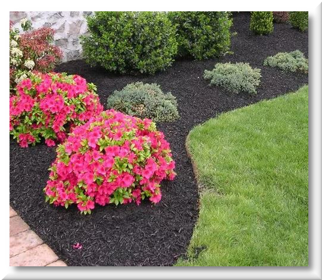
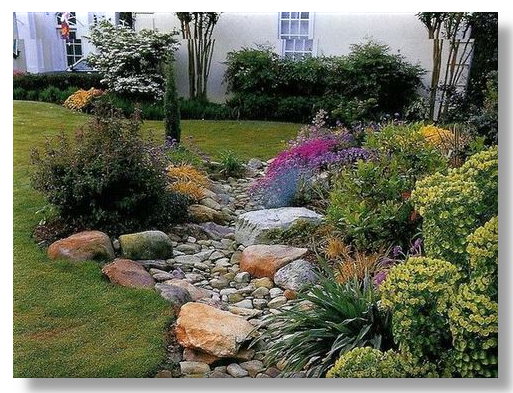
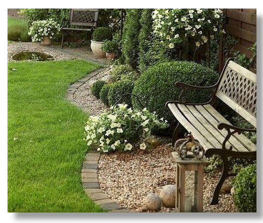
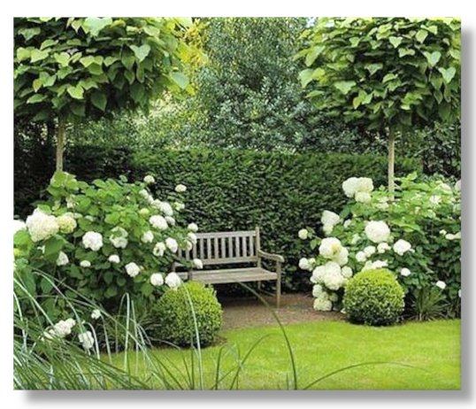

|  | Ornamental Trees and Plants
Ornamental trees, shrubs, annuals, grasses, and other plants are cultivated and planted for aesthetic and utility purposes in urban landscapes, including yards, parks, gardens, sports fields, cemeteries, medians, and roadsides. Insecticides are widely used to control pests impacting these plants. |
|  | Shrub: Barberry
Barberry (Berberis thunbergii) is deer-resistant and deciduous, with thorny stems that make it a good foundation plant for increasing home security. Once established, this compact, dense shrub is drought tolerant. We like the variety Sunjoy Tangelo (shown here) for its bright orange new growth that turns chartreuse on the leaf margins as the season progresses. |
|  | Summersweet Plant
Summersweet plant (Clethra alnifolia), also known as pepper bush, is an ornamental shrub with spikes of spicy-smelling white flowers. Blooming often takes place in summer. Its attractive dark green foliage takes on a yellow to orange color in autumn, making this plant even more spectacular. |
|  | Shasta Daisy
Shasta daisy flowers provide perky summer blooms, offering the look of the traditional daisy along with evergreen foliage that lasts year-round in many locations. When you learn how to grow Shasta daisy, you’ll find it to be the perfect, low maintenance perennial for naturalizing and filling in bare spots in the landscape. |
Privacy Policy | Do Not Sell My Personal InformationTerms of UseInterest-Based Advertisement | CA Supply Chains Act/UK Modern Slavery Act © Winners, Inc., 2021. All Rights Reserved. No portion of this site may be reproduced or duplicated without the express permission of Winners, Inc.